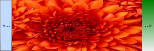

LightVisualElement
LightVisualElement is a lightweight element which is capable of displaying Text, Border and Images and can be easily customized. Here is a list of its properties allowing for fine tuning the element:
ShouldPaint - Indicates whether the element should be painted. Children visibility would not be affected.
CanFocus - Gets or sets value indicating whether an element can receive input focus.
DrawText, DrawFill, DrawBorder - Gets or sets value indicating whether an element can receive input focus.
BorderBoxStyle - Defines the border rendering style – SingleBorder, FourBorders, OuterInnerBorders
BorderDrawMode - Defines drawing border corners – HorizontalOverVertical, LeftOverTop, RightOverTop, RightOverBotton, LeftOverBottom etc.
BorderWidth - Defines the width the border on each side
BorderLeftWidth, BorderLeftWidth, BorderRightWidth, BorderBottomWidth - Defines the width of the border on each side independently
BorderGradientAngle - Defines the angle of the gradient the border uses as background.
BorderGradientStyle - Defines the gradient effects: Solid, Linear, Radial, Glass, OfficeGlass, Gel, and Vista.
BorderColor, BorderColor2, BorderColor3, BorderColor4 - Defines the four colors used for making gradient border background
BorderInnerColor, BorderInnerColor2, BorderInnerColor3, BorderInnerColor4 - Defines the four colors used for making the inner gradient border background
BackColor, BackColor2, BackColor3, BackColor4 - Defines the four colors used the element’s gradient background
NumberOfColors - Defines how many colors will be used to make the background color. If the value is ‘1’ the other three colors are ignored
GradientStyle - Defines the gradient effects: Solid, Linear, Radial, Glass, OfficeGlass, Gel, and Vista.
GradientAngle - Gets or sets the angle of the background gradient
GradientPercentage - Defines how much of the available space the first gradient color will take
GradientPercentage2 - Defines the space available for the the second gradient color
BackgroundImage - Gets or sets the BackgroundImage. This image fills up the entire element’s background
Image - Gets or sets the element’s image, the image can be resized inside the element.
ImageLayout - Specifies the position of the image on the control. None, Tile, Center, Stretch, Zoom
BackgroundImageLayout - Specifies the position of the BackgroundImage on the control. None, Tile, Center, Stretch, Zoom
ImageOpacity - Specifies the opacity of the set image
ImageAlignment, TextAlignment - Specifies alignment of content on the drawing surface. TopLeft, TopCenter, TopRight, MiddleLeft, MiddleCenter, MiddleRight, BottomLeft, BottomCenter, BottomRight
TextImageRelation - Specifies the position of the text and image relative to each other on a control. Overlay, ImageBeforeText, TextBeforeImage, ImageAboveText, TextAboveImage
ShowHorizontalLine, ShowHorizontalLineColor, ShowHorizontalLineWidth - These properties allow you to modify a horizontal line over the element
PaintTextFormat - An object which Encapsulates text layout information (such as alignment, orientation and tab stops) display manipulations (such as ellipsis insertion and national digit substitution) and OpenType features
DisableHTMLRendering - Gets or sets the value indicating whether html tags will be rendered.
TextBlock - An object which contains the text and its styling.
BorderLeftColor, BorderTopColor, BorderRightColor, BorderBottomColor, BorderLeftShadowColor, BorderTopShadowColor, BorderRightShadowColor, BorderBottomShadowColor - Defines border colors and shadows
ClipText - Determines whether text will be clipped within the calculated text paint rectangle.
Layout - Gets the LayoutManagerPart which is responsible for the layout
ImageTransparentColor - Transparent color to be used for the image.
BorderDashStyle - Specifies the style of dashed lines drawn with a border
EnableImageTransparency - Gets or sets a value indicating whether image transparency is supported.
Shadow - Gets or Sets the ShadowSettings
AutoEllipsis - Determines whether character trimming will be automatically applied to the element if text cannot be fitted within the available space.
UseMnemonic - Determines whether ampersand character will be treated as mnemonic or not.
TextWrap - Determines whether text wrap is enabled.
MeasureTrailingSpaces - Indicates whether the trailing white spaces will be calculated by the layout logic
TextParams - Gets the TextParams object which defines some text settings
The following example will show you how to make a simple image gallery with three LightVisualElements inside a DockLayoutPanel.

[C#] Creating a simple control with LightVisualElements
public class MyLightVisualElement : RadElement
{
private DockLayoutPanel mainPanel;
private LightVisualElement leftButtonElement;
private LightVisualElement rightButtonElement;
private LightVisualElement currentImageElement;
private Image[] images;
protected override void CreateChildElements()
{
this.mainPanel = new DockLayoutPanel();
this.mainPanel.LastChildFill = true;
this.Children.Add(this.mainPanel);
this.leftButtonElement = new LightVisualElement();
this.leftButtonElement.Text = "<--";
this.leftButtonElement.DrawBorder = true;
this.mainPanel.Children.Add(this.leftButtonElement);
DockLayoutPanel.SetDock(this.leftButtonElement, Telerik.WinControls.Layouts.Dock.Left);
this.leftButtonElement.Click += leftButtonElement_Click;
this.rightButtonElement = new LightVisualElement();
this.rightButtonElement.Text = "-->";
this.rightButtonElement.DrawFill = true;
this.rightButtonElement.BackColor = Color.Green;
this.mainPanel.Children.Add(this.rightButtonElement);
DockLayoutPanel.SetDock(this.rightButtonElement, Telerik.WinControls.Layouts.Dock.Right);
this.rightButtonElement.Click += rightButtonElement_Click;
this.currentImageElement = new LightVisualElement();
this.mainPanel.Children.Add(this.currentImageElement);
string imageFilesDirectory = Environment.GetFolderPath(Environment.SpecialFolder.MyPictures);
string[] imageFiles = Directory.GetFiles(imageFilesDirectory, "*.jpg");
this.images = new Image[imageFiles.Length];
for (int i = 0; i < imageFiles.Length; i++)
{
this.images[i] = new Bitmap(Image.FromFile(imageFiles[i]), new Size(300, 100));
}
if (this.images.Length >= 0)
{
this.currentImageElement.Image = this.images[0];
}
base.CreateChildElements();
}
private void rightButtonElement_Click(object sender, EventArgs e)
{
int currentImageIndex = Array.IndexOf(this.images, this.currentImageElement.Image);
if (++currentImageIndex <= this.images.Length - 1)
{
this.currentImageElement.Image = this.images[currentImageIndex];
}
}
private void leftButtonElement_Click(object sender, EventArgs e)
{
int currentImageIndex = Array.IndexOf(this.images, this.currentImageElement.Image);
if (--currentImageIndex >= 0)
{
this.currentImageElement.Image = this.images[currentImageIndex];
}
}
}
[VB.NET] Creating a simple control with LightVisualElements
Public Class MyLightVisualElement
Inherits RadElement
Private mainPanel As DockLayoutPanel
Private leftButtonElement As LightVisualElement
Private rightButtonElement As LightVisualElement
Private currentImageElement As LightVisualElement
Private images() As System.Drawing.Image
Protected Overrides Sub CreateChildElements()
Me.mainPanel = New DockLayoutPanel()
Me.mainPanel.LastChildFill = True
Me.Children.Add(Me.mainPanel)
Me.leftButtonElement = New LightVisualElement()
Me.leftButtonElement.Text = "<--"
Me.leftButtonElement.DrawBorder = True
Me.mainPanel.Children.Add(Me.leftButtonElement)
DockLayoutPanel.SetDock(Me.leftButtonElement, Telerik.WinControls.Layouts.Dock.Left)
AddHandler Me.leftButtonElement.Click, AddressOf leftButtonElement_Click
Me.rightButtonElement = New LightVisualElement()
Me.rightButtonElement.Text = "-->"
Me.rightButtonElement.DrawFill = True
Me.rightButtonElement.BackColor = System.Drawing.Color.Green
Me.mainPanel.Children.Add(Me.rightButtonElement)
DockLayoutPanel.SetDock(Me.rightButtonElement, Telerik.WinControls.Layouts.Dock.Right)
AddHandler Me.rightButtonElement.Click, AddressOf rightButtonElement_Click
Me.currentImageElement = New LightVisualElement()
Me.mainPanel.Children.Add(Me.currentImageElement)
Dim imageFilesDirectory As String = Environment.GetFolderPath(Environment.SpecialFolder.MyPictures)
Dim imageFiles As String() = Directory.GetFiles(imageFilesDirectory, "*.jpg")
ReDim images(imageFiles.Length - 1)
For i As Integer = 0 To imageFiles.Length - 1
Me.images(i) = New System.Drawing.Bitmap(System.Drawing.Image.FromFile(imageFiles(i)), New System.Drawing.Size(300, 100))
Next
If Me.images.Length >= 0 Then
Me.currentImageElement.Image = Me.images(0)
End If
MyBase.CreateChildElements()
End Sub
Private Sub rightButtonElement_Click(sender As Object, e As EventArgs)
Dim currentImageIndex As Integer = Array.IndexOf(Me.images, Me.currentImageElement.Image)
If System.Threading.Interlocked.Increment(currentImageIndex) <= Me.images.Length - 1 Then
Me.currentImageElement.Image = Me.images(currentImageIndex)
End If
End Sub
Private Sub leftButtonElement_Click(sender As Object, e As EventArgs)
Dim currentImageIndex As Integer = Array.IndexOf(Me.images, Me.currentImageElement.Image)
If System.Threading.Interlocked.Decrement(currentImageIndex) >= 0 Then
Me.currentImageElement.Image = Me.images(currentImageIndex)
End If
End Sub
End Class